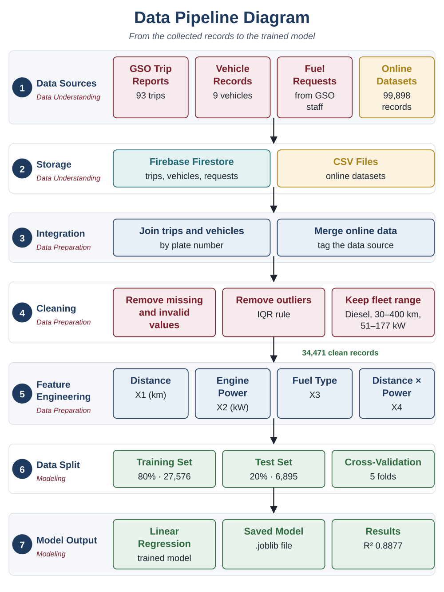
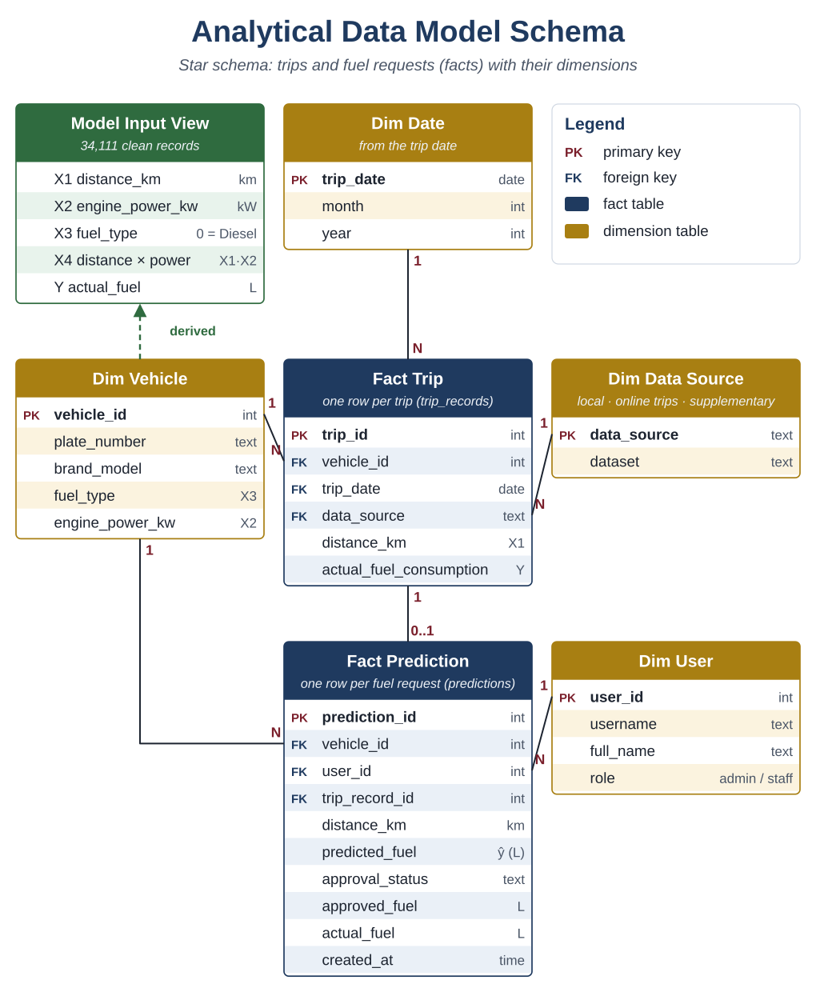
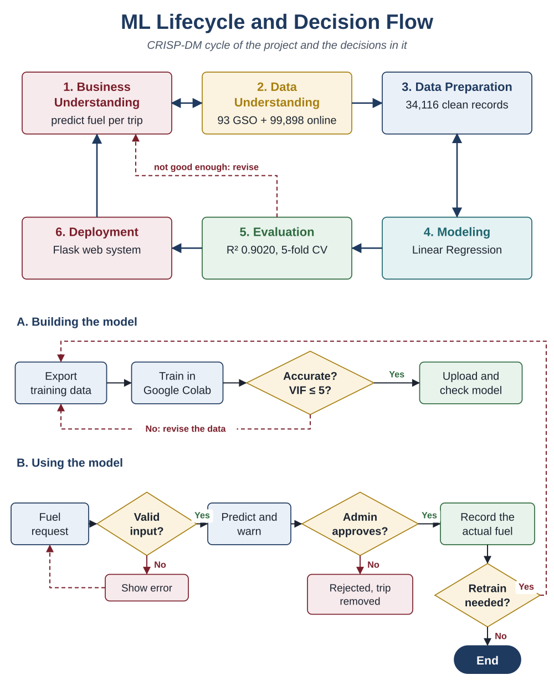
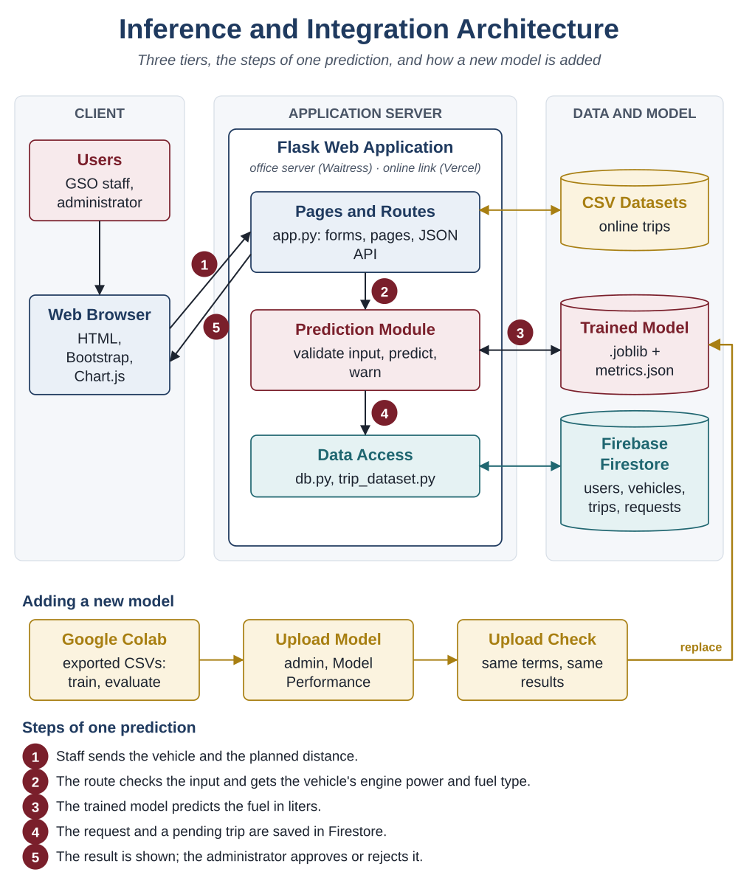

| Figure | Diagram | Used instead of | CRISP-DM phases |
|---|---|---|---|
| 1 | Data Pipeline Diagram | Data Flow Diagram (DFD) | Data Understanding, Data Preparation, Modeling |
| 2 | Analytical Data Model Schema | Entity Relationship Diagram (ERD) | Data Understanding, Data Preparation |
| 3 | ML Lifecycle and Decision Flow | Flowchart | All six phases |
| 4 | Inference and Integration Architecture | System Architecture | Deployment |




Figure 1 shows the seven stages that turn the collected records into the trained model. The data come from the GSO trip reports (93 trips), the vehicle records (9 vehicles), the fuel requests of the GSO staff, and two online datasets (99,898 records). They are stored in Firebase Firestore and in CSV files. The trips are joined with their vehicles by plate number and merged with the online data. Cleaning removes missing and invalid values and outliers (IQR rule), keeps only the fleet's range: diesel, 30–400 km, and 51–177 kW, and removes records with a standardized residual beyond ±3. This leaves 34,111 clean records. Four model terms are formed: distance, engine power, fuel type, and distance × engine power. The data are split 80/20 with 5-fold cross-validation, and the Linear Regression model, trained by weighted least squares, is saved with its results (R² = 0.9008).
Figure 2 shows the data as a star schema. The two fact tables are Fact Trip, with one row per trip and the measures distance and actual fuel, and Fact Prediction, with one row per fuel request and the predicted and actual fuel. They are described by the dimension tables Vehicle (plate number, model, fuel type, engine power), Date, Data Source (local, online trips, or supplementary), and User. A fuel request is linked to at most one trip. The Model Input View is derived from the trips and vehicles. It holds the predictors X1 to X4 and the target Y used to train the model.
Figure 3 shows the six CRISP-DM phases of the study as a cycle. If the evaluation is not good enough, the work goes back to an earlier phase. Part A shows how the model is built: the data are prepared and the model is trained, then it is deployed only if it is accurate and every VIF is at most 5; otherwise the data are revised. Part B shows how the model is used: a fuel request with valid input is predicted, the administrator approves or rejects it, and the actual fuel is recorded. When enough new trips have been collected, the model is retrained.
Figure 4 shows the three tiers of the system. Users work in the web browser (client). The Flask web application runs on the GSO office server or on the online link (application server). Firebase Firestore, the CSV datasets, and the trained model form the data and model tier. The numbered steps show one prediction: the request is sent, the input is checked, the model predicts the fuel, the request and a pending trip are saved, and the result is shown for approval. A new model is trained in Google Colab, uploaded by the administrator, and checked before it replaces the current model.